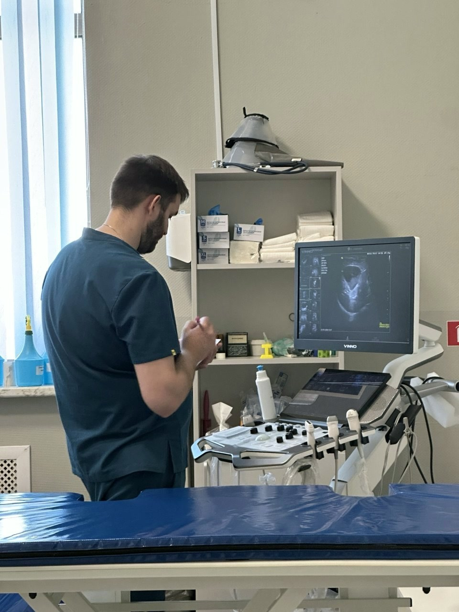

На дому
- Осмотр и консультация
- Вакцинация
- Забор анализов
- Назначенные процедуры — по согласованию
Приём ведёт Роман Чертопалов — кардиолог, нефроуролог и специалист функциональной диагностики. 8 лет практики, три года работы в минской клинике «Девять жизней».

01Профиль врача
Роман помогает понять, какая помощь нужна питомцу, и объясняет, что делать дальше. Обоснованные назначения и понятные объяснения: что делаем и зачем это нужно.
Болезни сердца и сосудов.
Болезни почек и мочевыводящих путей.
Ультразвуковое исследование (УЗИ).
Исполнял обязанности главного врача.
Доказательная медицина и pet‑friendly приём: спокойно и бережно, с вниманием к характеру и самочувствию питомца.
Специализация — это профиль врача. Какие исследования и процедуры возможны на выезде, уточняется перед записью.



02Порядок выезда
Назовите город и адрес, возраст животного и причину обращения.
Уточним возможность помощи на дому, время визита и предполагаемую стоимость.
Осмотрит питомца, проведёт согласованные процедуры и объяснит дальнейшие действия.
Подготовьте к приезду
03Услуги
Осмотр питомца на дому, обсуждение его состояния и дальнейших действий.
на домууточняетсяПрофилактические прививки кошкам и собакам. Условия проведения уточняются заранее.
на домууточняетсяЗабор биоматериала на дому. Перечень исследований и подготовку согласуем перед выездом.
на домууточняетсяНазначенные ветеринаром процедуры и уход. Возможность выполнения дома обсуждается отдельно.
на домууточняетсяРасскажите, что беспокоит питомца, и покажите назначения или результаты обследований. Обсудим следующие шаги и необходимость очного приёма.
онлайнуточняетсяСтоимость зависит от адреса и необходимой помощи: выезд, осмотр, процедуры, препараты и расходные материалы. Итоговую сумму обсудим перед записью.
04Границы и география
На дому
Нужна клиника
Возможности домашнего приёма ограничены. Некоторые исследования и лечение требуют оборудования клиники.
Подходит ли выезд для вашей ситуации, обсуждается до записи.
География выезда
Полоцк, Новополоцк, Полоцкий район и ближайшие населённые пункты. Дальние адреса — по согласованию.
05Вопросы
Да. Онлайн-консультацию можно согласовать с Романом. Если ситуации нужен очный осмотр, дальнейший формат помощи обсуждается с врачом.
Свяжитесь с врачом, назовите город и адрес, расскажите о питомце и причине обращения. Возможность домашнего приёма и время визита согласовываются заранее.
Состав зависит от задачи: выезд, осмотр, необходимые процедуры, препараты и расходные материалы. Итоговую стоимость и возможные доплаты уточняйте перед записью.
Нет. Некоторые исследования и лечение требуют оборудования клиники. Перед записью обсудите с врачом, подходит ли выезд для вашей ситуации.
06Запись
Назовите город и адрес, возраст животного и причину обращения. Обсудим, подходит ли выезд или лучше начать с онлайн-консультации.